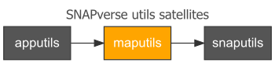

maputils contains Leaflet-related utilities for Shiny app development in a SNAP context. The package inherits from apputils, which contains common utility functions, settings and references for use across multiple Shiny apps. It is also imported by snaputils, which contains more general utility functions and support for Shiny apps specific to a SNAP context. All three packages are satellite members of the SNAPverse collection of R packages.
maputils contains SpatialPolygonsDataFrame data sets useful in SNAP Shiny apps for visual representation of geographic regions via Leaflet maps. These data sets are simplified derivations of the maps offered by the snappoly package, containing fewer vertices. This allows them to be used for efficient map display in apps without slowing apps down due to unnecessarily high map resolution. Use the maps in maputils only for Leaflet widgets in apps. For data analysis, e.g., extracting data by polygon, use the higher resolution source maps in snappoly.
Each map is in WGS84 lon/lat rather than NAD83 Alaska Albers like the source maps in snappoly. There are slight differences in derived maps from the snappoly source maps as noted below.
There are ten available maps:
-
akcan: The full SNAP PRISM domain, a single union polygon of the State of Alaska and the five SNAP-relevant western Canadian provinces: Alberta, British Columbia, Manitoba, Saskatchewan and Yukon Territory. -
akcan2: The same asakcan, but retaining the six distinct encompassing state/province polygons. Seesnappoly::canadafor all provinces. -
ecoreg1: Alaska level 1 ecological regions (ecoregions). Ecoregion maps are flattened, one map for each level, compared tosnappoly::ecoreg. -
ecoreg2: Alaska level 2 ecoregions. -
ecoreg3: Alaska level 3 ecoregions. -
aklcc: Alaska Landscape Conservation Cooperative. -
lcc: Alaska and Canada Landscape Conservation Cooperative. -
cavm: Circumpolar Arctic Vegetation (Alaska). -
fmz: Alaska Fire Service fire management zones. -
tpa: Terrestrial protected areas.

Installation
You can install maputils from github with:
# install.packages('devtools')
devtools::install_github("leonawicz/maputils")